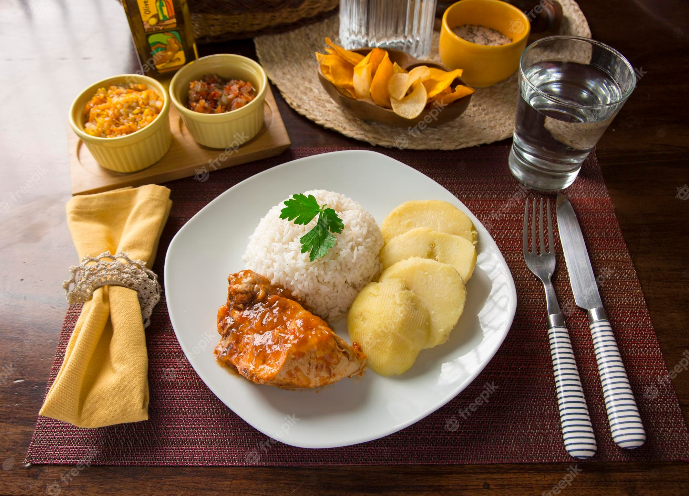
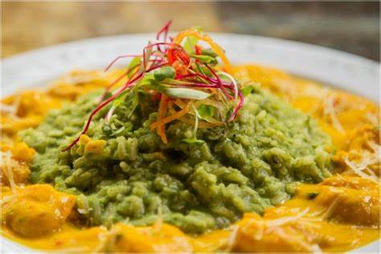
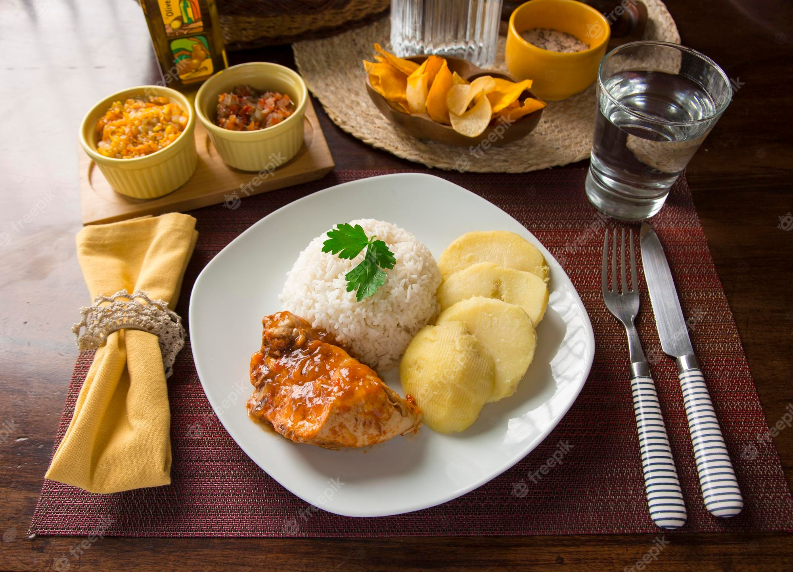
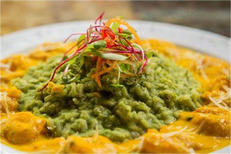

Sobre a
Culinária
Ingredientes
Os principais ingredientes da culinária peruana são pimentas (como o ají amarillo), batatas, milho, peixes e frutos do mar frescos, quinoa, ají panca, coentro e uma variedade de frutas tropicais e nativas da Amazônia. Esses ingredientes refletem a diversidade geográfica do Peru e são utilizados em pratos icônicos como ceviche, lomo saltado e ají de gallina, tornando a culinária peruana rica e saborosa
Técnicas
A culinária peruana é conhecida por suas diversas técnicas de preparo, que contribuem para a criação de pratos saborosos e autênticos. Algumas das principais técnicas utilizadas são o ceviche, no qual o peixe cru é marinado em suco cítrico, resultando em uma combinação de sabores frescos e ácidos. O anticucho, por sua vez, consiste em espetos grelhados de carne marinada, oferecendo uma mistura suculenta de carne temperada e grelhada.
Influências
A culinária peruana é resultado de uma fusão de influências culturais ao longo da história. As principais influências incluem a indígena, com ingredientes nativos como batatas e quinoa, a espanhola, que trouxe técnicas culinárias e ingredientes como carne de porco, e a africana, presente em pratos como o tacu tacu. A imigração asiática contribuiu com elementos da culinária chinesa e japonesa, e influências contemporâneas trouxeram inovações e experimentação à culinária peruana. Essa diversidade resulta em uma culinária única, aclamada mundialmente.